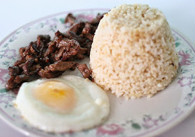

Tapsilog Recipe

Ingredients:
- 1 lb beef sirloin or tenderloin, sliced thinly
- 1/4 cup soy sauce
- 2 tbsp vinegar
- 3 cloves garlic, minced
- 1 tbsp brown sugar
- 1/2 tsp black pepper
- 1/4 tsp salt
- 2 tbsp vegetable oil
- 4 cups cooked rice (preferably day-old rice)
- 2 eggs
- 1 tbsp oil (for frying the eggs)
- 1/2 cup atchara (pickled papaya) (optional, for garnish)
Instructions:
- In a bowl, combine soy sauce, vinegar, minced garlic, brown sugar, black pepper, and salt. Marinate the beef in the mixture for at least 30 minutes or overnight for better flavor.
- Heat 2 tablespoons of vegetable oil in a pan over medium-high heat. Sauté the marinated beef until it is cooked through and browned on all sides. Set aside.
- In a separate pan, heat 1 tablespoon of oil and fry the eggs sunny side up or to your desired level of doneness.
- To assemble, place a serving of rice on a plate. Top with the cooked beef and a fried egg.
- Serve with atchara (pickled papaya) on the side, if desired.
- Enjoy your tapsilog with a hot cup of coffee or your preferred drink!
Back to Menu